import arviz as az
import bambi as bmb
import kulprit as kpt
import matplotlib.pyplot as plt
import numpy as np
import pandas as pd
import pymc as pm
az.style.use("arviz-variat")
az.rcParams["stats.ci_prob"] = 0.95
plt.rcParams["figure.dpi"] = 100
SEED = 7412
bambi_kwargs = dict(random_seed=SEED, idata_kwargs={"log_likelihood": True})Student grades and variable selection
This notebook includes the code for Bayesian Workflow book Chapter 27 Models for regression coefficients and variable selection: Student grades.
1 Introduction
We work with an example of predicting mathematics and Portuguese exam grades for a sample of high school students in Portugal (Cortez and Silva 2008). The same data was used in Chapter 12 of Regression and Other Stories book (Gelman, Hill, and Vehtari 2020) to illustrate different models for regression coefficients .
We predict the students’ final-year median exam grade in mathematics (n=407) and Portuguese (n=657) given a large number of potentially relevant predictors: student’s school, student’s sex, student’s age, student’s home address type, family size, parents’ cohabitation status, mother’s education, father’s education, home-to-school travel time, weekly study time, number of past class failures, extra educational support, extra paid classes within the course subject, extra-curricular activities, whether the student attended nursery school, whether the student wants to take higher education, internet access at home, whether the student has a romantic relationship, quality of family relationships, free time after school, going out with friends, weekday alcohol consumption, weekend alcohol consumption, current health status, and number of school absences.
2 Variable selection
If we would care only about the predictive performance, we would not need to do variable selection, but we would use all the variables and a sensible joint prior. Here we are interested in finding the smallest set of variables that provide similar predictive performance as using all the variables (and sensible prior). This helps to improve explainability and to design further studies that could include also interventions. We are not considering causal structure, and the selected variables are unlikely to have direct causal effect, but the selected variables that have high predictive relevance are such that their role in causal graph should be eventually considered.
We first build models with all predictors, and then use LOO-based model comparison to identify the most relevant predictors.
3 Data
Get the data from Regression and Other Stories repository
student = pd.read_csv("https://raw.githubusercontent.com/avehtari/ROS-Examples/master/Student/data/student-merged-all.csv")
# List the predictors to be used
predictors = [
"school", "sex", "age", "address", "famsize", "Pstatus", "Medu", "Fedu",
"traveltime", "studytime", "failures", "schoolsup", "famsup", "paid",
"activities", "nursery", "higher", "internet", "romantic", "famrel",
"freetime", "goout", "Dalc", "Walc", "health", "absences"
]The data includes 3 grades for both mathematics and Portuguese. To reduce the variability in the outcome we use median grades based on those three exams for each topic. We select only students with non-zero grades.
grades = ["G1mat", "G2mat", "G3mat", "G1por", "G2por", "G3por"]
# Replace 0 with NaN for grade columns
grade_cols = student.filter(regex=r"G[1-3]...").columns
student[grade_cols] = student[grade_cols].replace(0, np.nan)
# Calculate median for mat and por grades
mat_cols = student.filter(regex=r"G.mat").columns
por_cols = student.filter(regex=r"G.por").columns
student["Gmat"] = student[mat_cols].median(axis=1)
student["Gpor"] = student[por_cols].median(axis=1)
# Create subset for Gmat with finite values
student_Gmat = student[np.isfinite(student["Gmat"])][["Gmat"] + predictors].copy()
student_Gmat = student_Gmat[np.isfinite(student_Gmat.mean(axis=1))]
# Create subset for Gpor with finite values
student_Gpor = student[np.isfinite(student["Gpor"])][["Gpor"] + predictors].copy()
student_Gpor = student_Gpor[np.isfinite(student_Gpor.mean(axis=1))]
nmat = len(student_Gmat)
npor = len(student_Gpor)
print(f"Math students: {nmat}")
display(student_Gmat.head(10))
print(f"\nPortuguese students: {npor}")
display(student_Gpor.head(10))Math students: 407| Gmat | school | sex | age | address | famsize | Pstatus | Medu | Fedu | traveltime | ... | higher | internet | romantic | famrel | freetime | goout | Dalc | Walc | health | absences | |
|---|---|---|---|---|---|---|---|---|---|---|---|---|---|---|---|---|---|---|---|---|---|
| 0 | 10.0 | 0 | 0 | 15 | 0 | 0 | 1 | 1 | 1 | 2.0 | ... | 1.0 | 1 | 0.0 | 3.0 | 1.0 | 2.0 | 1.0 | 1.0 | 1.0 | 2.0 |
| 2 | 6.0 | 0 | 0 | 15 | 0 | 0 | 1 | 1 | 1 | 1.0 | ... | 1.0 | 1 | 1.0 | 3.0 | 3.0 | 4.0 | 2.0 | 4.0 | 5.0 | 2.0 |
| 3 | 13.0 | 0 | 0 | 15 | 0 | 0 | 1 | 2 | 2 | 1.0 | ... | 1.0 | 0 | 0.0 | 4.0 | 3.0 | 1.0 | 1.0 | 1.0 | 2.0 | 8.0 |
| 4 | 9.0 | 0 | 0 | 15 | 0 | 0 | 1 | 2 | 4 | 1.0 | ... | 1.0 | 1 | 0.0 | 4.0 | 3.0 | 2.0 | 1.0 | 1.0 | 5.0 | 2.0 |
| 5 | 10.0 | 0 | 0 | 15 | 0 | 0 | 1 | 3 | 3 | 2.0 | ... | 1.0 | 1 | 1.0 | 4.0 | 2.0 | 1.0 | 2.0 | 3.0 | 3.0 | 8.0 |
| 6 | 12.0 | 0 | 0 | 15 | 0 | 0 | 1 | 3 | 4 | 1.0 | ... | 1.0 | 1 | 0.0 | 4.0 | 3.0 | 2.0 | 1.0 | 1.0 | 5.0 | 2.0 |
| 7 | 12.0 | 0 | 0 | 15 | 0 | 0 | 1 | 3 | 4 | 2.0 | ... | 1.0 | 1 | 1.0 | 4.0 | 2.0 | 2.0 | 2.0 | 2.0 | 5.0 | 0.0 |
| 8 | 8.0 | 0 | 0 | 15 | 0 | 1 | 1 | 2 | 2 | 2.0 | ... | 1.0 | 1 | 0.0 | 4.0 | 1.0 | 3.0 | 1.0 | 3.0 | 4.0 | 2.0 |
| 9 | 16.0 | 0 | 0 | 15 | 0 | 1 | 1 | 3 | 1 | 2.0 | ... | 1.0 | 1 | 0.0 | 4.0 | 4.0 | 2.0 | 2.0 | 3.0 | 3.0 | 12.0 |
| 10 | 11.0 | 0 | 0 | 15 | 1 | 0 | 0 | 3 | 3 | 1.0 | ... | 1.0 | 0 | 0.0 | 4.0 | 3.0 | 3.0 | 1.0 | 1.0 | 4.0 | 10.0 |
10 rows × 27 columns
Portuguese students: 657| Gpor | school | sex | age | address | famsize | Pstatus | Medu | Fedu | traveltime | ... | higher | internet | romantic | famrel | freetime | goout | Dalc | Walc | health | absences | |
|---|---|---|---|---|---|---|---|---|---|---|---|---|---|---|---|---|---|---|---|---|---|
| 0 | 13.0 | 0 | 0 | 15 | 0 | 0 | 1 | 1 | 1 | 2.0 | ... | 1.0 | 1 | 0.0 | 3.0 | 1.0 | 2.0 | 1.0 | 1.0 | 1.0 | 2.0 |
| 1 | 9.0 | 0 | 0 | 15 | 0 | 0 | 1 | 1 | 1 | NaN | ... | NaN | 1 | NaN | NaN | NaN | NaN | NaN | NaN | NaN | NaN |
| 2 | 11.0 | 0 | 0 | 15 | 0 | 0 | 1 | 1 | 1 | 1.0 | ... | 1.0 | 1 | 1.0 | 3.0 | 3.0 | 4.0 | 2.0 | 4.0 | 5.0 | 2.0 |
| 3 | 13.0 | 0 | 0 | 15 | 0 | 0 | 1 | 2 | 2 | 1.0 | ... | 1.0 | 0 | 0.0 | 4.0 | 3.0 | 1.0 | 1.0 | 1.0 | 2.0 | 8.0 |
| 4 | 10.0 | 0 | 0 | 15 | 0 | 0 | 1 | 2 | 4 | 1.0 | ... | 1.0 | 1 | 0.0 | 4.0 | 3.0 | 2.0 | 1.0 | 1.0 | 5.0 | 2.0 |
| 5 | 13.0 | 0 | 0 | 15 | 0 | 0 | 1 | 3 | 3 | 2.0 | ... | 1.0 | 1 | 1.0 | 4.0 | 2.0 | 1.0 | 2.0 | 3.0 | 3.0 | 8.0 |
| 6 | 12.0 | 0 | 0 | 15 | 0 | 0 | 1 | 3 | 4 | 1.0 | ... | 1.0 | 1 | 0.0 | 4.0 | 3.0 | 2.0 | 1.0 | 1.0 | 5.0 | 2.0 |
| 7 | 11.0 | 0 | 0 | 15 | 0 | 0 | 1 | 3 | 4 | 2.0 | ... | 1.0 | 1 | 1.0 | 4.0 | 2.0 | 2.0 | 2.0 | 2.0 | 5.0 | 0.0 |
| 8 | 11.0 | 0 | 0 | 15 | 0 | 1 | 1 | 2 | 2 | 2.0 | ... | 1.0 | 1 | 0.0 | 4.0 | 1.0 | 3.0 | 1.0 | 3.0 | 4.0 | 2.0 |
| 9 | 15.0 | 0 | 0 | 15 | 0 | 1 | 1 | 3 | 1 | 2.0 | ... | 1.0 | 1 | 0.0 | 4.0 | 4.0 | 2.0 | 2.0 | 3.0 | 3.0 | 12.0 |
10 rows × 27 columns
The following plot shows the distributions of median math and Portuguese exam scores for each student.
_, axes = plt.subplots(1, 2, figsize=(10, 3))
ax1 = axes[0]
ax1.hist(student_Gmat["Gmat"], bins=np.sort(student_Gmat["Gmat"].unique().astype(int)))
ax1.set(xlabel="Median math exam score", yticks=[])
ax1.spines[["top", "right"]].set_visible(False)
ax2 = axes[1]
ax2.hist(student_Gpor["Gpor"], bins=np.sort(student_Gpor["Gpor"].unique().astype(int)))
ax2.set(xlabel="Median Portuguese exam score", yticks=[])
ax2.spines[["top", "right"]].set_visible(False)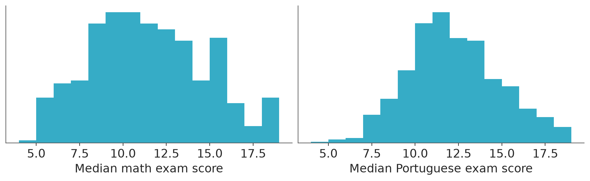
We standardize all to have standard deviation 1, to make the comparison of relevances easier and also to make the definition of priors easier.
# Standardize predictors for math
studentstd_Gmat = student_Gmat.copy()
studentstd_Gmat[predictors] = (student_Gmat[predictors] - student_Gmat[predictors].mean()) / student_Gmat[predictors].std()
# Standardize predictors for Portuguese
studentstd_Gpor = student_Gpor.copy()
studentstd_Gpor[predictors] = (student_Gpor[predictors] - student_Gpor[predictors].mean()) / student_Gpor[predictors].std()
studentstd_Gpor| Gpor | school | sex | age | address | famsize | Pstatus | Medu | Fedu | traveltime | ... | higher | internet | romantic | famrel | freetime | goout | Dalc | Walc | health | absences | |
|---|---|---|---|---|---|---|---|---|---|---|---|---|---|---|---|---|---|---|---|---|---|
| 0 | 13.0 | -0.723577 | -0.845172 | -1.436642 | -1.526916 | -0.642086 | 0.372071 | -1.343319 | -1.191008 | 0.801854 | ... | 0.222084 | 0.545861 | -0.679991 | -1.019716 | -2.248977 | -0.982895 | -0.534650 | -0.997848 | -1.841337 | -0.435313 |
| 1 | 9.0 | -0.723577 | -0.845172 | -1.436642 | -1.526916 | -0.642086 | 0.372071 | -1.343319 | -1.191008 | NaN | ... | NaN | 0.545861 | NaN | NaN | NaN | NaN | NaN | NaN | NaN | NaN |
| 2 | 11.0 | -0.723577 | -0.845172 | -1.436642 | -1.526916 | -0.642086 | 0.372071 | -1.343319 | -1.191008 | -0.636212 | ... | 0.222084 | 0.545861 | 1.466758 | -1.019716 | -0.225163 | 0.784003 | 0.593727 | 1.340666 | 1.015072 | -0.435313 |
| 3 | 13.0 | -0.723577 | -0.845172 | -1.436642 | -1.526916 | -0.642086 | 0.372071 | -0.461640 | -0.285346 | -0.636212 | ... | 0.222084 | -1.829178 | -0.679991 | 0.065330 | -0.225163 | -1.866344 | -0.534650 | -0.997848 | -1.127235 | 0.351546 |
| 4 | 10.0 | -0.723577 | -0.845172 | -1.436642 | -1.526916 | -0.642086 | 0.372071 | -0.461640 | 1.525979 | -0.636212 | ... | 0.222084 | 0.545861 | -0.679991 | 0.065330 | -0.225163 | -0.982895 | -0.534650 | -0.997848 | 1.015072 | -0.435313 |
| ... | ... | ... | ... | ... | ... | ... | ... | ... | ... | ... | ... | ... | ... | ... | ... | ... | ... | ... | ... | ... | ... |
| 674 | 6.5 | 1.379919 | 1.181390 | 1.857857 | -1.526916 | -0.642086 | 0.372071 | -1.343319 | -1.191008 | 0.801854 | ... | 0.222084 | -1.829178 | -0.679991 | 0.065330 | -0.225163 | -0.982895 | -0.534650 | 0.561162 | 1.015072 | -0.697600 |
| 675 | 9.0 | 1.379919 | 1.181390 | 1.857857 | 0.653918 | -0.642086 | 0.372071 | -1.343319 | -1.191008 | NaN | ... | NaN | 0.545861 | NaN | NaN | NaN | NaN | NaN | NaN | NaN | NaN |
| 676 | 9.0 | 1.379919 | 1.181390 | 1.857857 | 0.653918 | -0.642086 | 0.372071 | -0.461640 | -1.191008 | NaN | ... | NaN | 0.545861 | NaN | NaN | NaN | NaN | NaN | NaN | NaN | NaN |
| 677 | 9.0 | 1.379919 | 1.181390 | 1.857857 | 0.653918 | -0.642086 | 0.372071 | 0.420039 | -0.285346 | NaN | ... | NaN | -1.829178 | NaN | NaN | NaN | NaN | NaN | NaN | NaN | NaN |
| 679 | 10.0 | 1.379919 | 1.181390 | 2.681482 | -1.526916 | -0.642086 | 0.372071 | -1.343319 | -1.191008 | NaN | ... | NaN | 0.545861 | NaN | NaN | NaN | NaN | NaN | NaN | NaN | NaN |
657 rows × 27 columns
4 Default priors on coefficients
Before variable selection, we want to build a good model with all covariates. We first illustrate that very wide priors may be bad when we have many predictors. By default Bambi uses very weakly informative priors on regression coefficients. We also ask Bambi to compute the log-likelihood as we will need it to compute LOO-\(R^2\) later. We also use predict to compute the posterior distribution of mu, we need this to compute Bayesian-\(R^2\) later.
fitm_u = bmb.Model("Gmat ~ " + " + ".join(predictors), studentstd_Gmat)
fitm_u_idata = fitm_u.fit(**bambi_kwargs)
fitm_u.predict(fitm_u_idata, inplace=True, kind="response", random_seed=SEED)
fitm_uInitializing NUTS using jitter+adapt_diag...
Multiprocess sampling (4 chains in 4 jobs)
NUTS: [sigma, Intercept, school, sex, age, address, famsize, Pstatus, Medu, Fedu, traveltime, studytime, failures, schoolsup, famsup, paid, activities, nursery, higher, internet, romantic, famrel, freetime, goout, Dalc, Walc, health, absences]/home/osvaldo/anaconda3/envs/bwb/lib/python3.14/site-packages/rich/live.py:260: UserWarning: install "ipywidgets"
for Jupyter support
warnings.warn('install "ipywidgets" for Jupyter support')
/home/osvaldo/anaconda3/envs/bwb/lib/python3.14/site-packages/pymc/sampling/mcmc.py:1163: FutureWarning: Passing `log_likelihood` via `idata_kwargs` is deprecated and will be removed in future versions. Call `pm.compute_log_likelihood(idata)` instead.
return _sample_return(
Sampling 4 chains for 1_000 tune and 1_000 draw iterations (4_000 + 4_000 draws total) took 6 seconds. Formula: Gmat ~ school + sex + age + address + famsize + Pstatus + Medu + Fedu + traveltime + studytime + failures + schoolsup + famsup + paid + activities + nursery + higher + internet + romantic + famrel + freetime + goout + Dalc + Walc + health + absences
Family: gaussian
Link: mu = identity
Observations: 407
Priors:
target = mu
Common-level effects
Intercept ~ Normal(mu: 10.9951, sigma: 8.2274)
school ~ Normal(mu: 0.0, sigma: 8.2375)
sex ~ Normal(mu: 0.0, sigma: 8.2375)
age ~ Normal(mu: 0.0, sigma: 8.2375)
address ~ Normal(mu: 0.0, sigma: 8.2375)
famsize ~ Normal(mu: 0.0, sigma: 8.2375)
Pstatus ~ Normal(mu: 0.0, sigma: 8.2375)
Medu ~ Normal(mu: 0.0, sigma: 8.2375)
Fedu ~ Normal(mu: 0.0, sigma: 8.2375)
traveltime ~ Normal(mu: 0.0, sigma: 8.2375)
studytime ~ Normal(mu: 0.0, sigma: 8.2375)
failures ~ Normal(mu: 0.0, sigma: 8.2375)
schoolsup ~ Normal(mu: 0.0, sigma: 8.2375)
famsup ~ Normal(mu: 0.0, sigma: 8.2375)
paid ~ Normal(mu: 0.0, sigma: 8.2375)
activities ~ Normal(mu: 0.0, sigma: 8.2375)
nursery ~ Normal(mu: 0.0, sigma: 8.2375)
higher ~ Normal(mu: 0.0, sigma: 8.2375)
internet ~ Normal(mu: 0.0, sigma: 8.2375)
romantic ~ Normal(mu: 0.0, sigma: 8.2375)
famrel ~ Normal(mu: 0.0, sigma: 8.2375)
freetime ~ Normal(mu: 0.0, sigma: 8.2375)
goout ~ Normal(mu: 0.0, sigma: 8.2375)
Dalc ~ Normal(mu: 0.0, sigma: 8.2375)
Walc ~ Normal(mu: 0.0, sigma: 8.2375)
health ~ Normal(mu: 0.0, sigma: 8.2375)
absences ~ Normal(mu: 0.0, sigma: 8.2375)
Auxiliary parameters
sigma ~ HalfStudentT(nu: 4.0, sigma: 3.291)
------
* To see a plot of the priors call the .plot_priors() method.
* To see a summary or plot of the posterior pass the object returned by .fit() to az.summary() or az.plot_trace()If we compare bayesian-\(R^2\) and LOO-\(R^2\), we see that the bayesian-\(R^2\) is much higher, which means that the posterior estimate for the residual variance is strongly underestimated and the model has overfitted the data.
az.bayesian_r2(fitm_u_idata, pred_mean="mu", scale="sigma")bayesian_R2(mean=0.3, eti_lb=0.24, eti_ub=0.37)az.loo_r2(fitm_u_idata, var_name="Gmat")loo_R2(mean=0.19, eti_lb=0.1, eti_ub=0.26)We plot the marginal posteriors for coefficients. For many coefficients the posterior is quite wide.
pc = az.plot_ridge(
fitm_u_idata,
var_names=predictors,
combined=True,
)
pc.coords = {"column": "ridge"}
az.add_lines(pc, 0)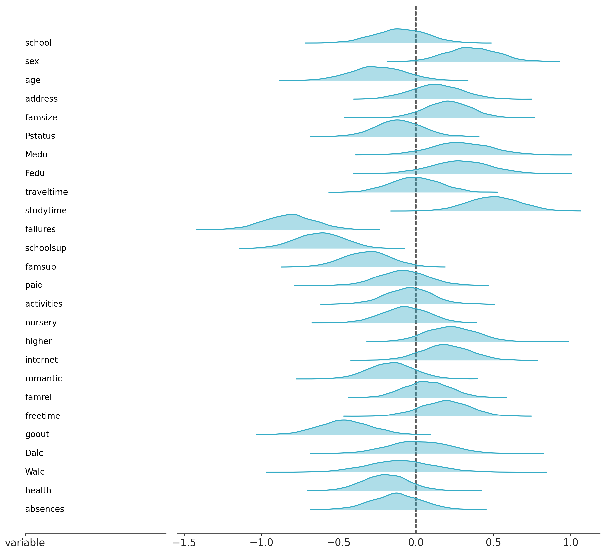
4.1 Piranha theorem
The common proper prior choice for coefficients is independent wide normal prior. Piranha theorem states that it is not possible that all predictors would be independent and have large coefficients at the same time (Tosh et al. 2024). Thus when we have many predictors we should include prior information that not all coefficients can be large. One option is simply to divide the normal prior variance with the number of predictors which keeps the total variance constant (assuming the predictors are normalized). Other option is to use more elaborate joint priors on coefficients.
5 Implied priors on \(R^2\) and R2D2 prior
In regression analysis cases we might assume that data is noisy and it is unlikely that we would get almost perfect fit. We can measure the proportion of variance explained by the model with \(R^2\). To understand what is the implied prior on \(R^2\) given different priors on coefficients, we can simply sample from the prior and compute Bayesian \(R^2\) using the prior draws. The Bayesian-\(R^2\) depends only on the model parameters, and thus can be used without computing residuals that depend on data.
If we have some prior information about \(R^2\) we can use R2D2 prior (Zhang et al. 2022) to first define a prior directly on \(R^2\), and then the prior is propagated to coefficients so that despite the number of predictors the prior on \(R^2\) stays constant. As \(R^2\) depends also on the residual scale, R2D2 prior is a joint prior on coefficients and residual sigma.
Although we can fit models with uniform prior on coefficients and get proper posterior, we can’t sample from improper unbounded uniform prior. Thus, in the following we consider only models with proper priors. For all the following models we use normal+(0, 3) prior (where normal+ indicates normal distribution constrained to be positive) for residual scale sigma, which is very weak prior as the standard deviation of the whole data is 3.3. We use four different priors for coefficients:
- Independent normal(0, 2.5) prior which is a proper prior used as default by
rstanarmand considered to be weakly informative for a single coefficient. - Independent scaled normal prior. If we assume that many predictors may each have small relevance, we can scale the independent priors so that the sum of the prior variance stays reasonable. In this case we have 26 predictors and could have a prior guess that proportion of the explained variance is near \(0.3\). Then a simple approach would be to assign independent priors to regression coefficients with mean \(0\) and standard deviation \(\sqrt{0.3/26}\operatorname{sd}(y)\).
- Regularized horseshoe prior (Piironen and Vehtari 2017) which is a joint prior for the coefficients depending also on the residual scale, and it can be used to define sparsity assuming prior with the expected number of relevant coefficients. Here we guess that maybe 6 coefficients are relevant and set the global scale according to that. The result is not sensitive to the exact value for the prior guess of the number of relevant coefficients as it states just the mean for the prior. Regularized horseshoe has good prior predictive behavior when more variables are added.
- R2D2 prior, which has the benefit that it first defines the prior directly on \(R^2\), and then the prior is propagated to the coefficients. The R2D2 prior is predictively consistent, so that the prior on \(R^2\) stays constant as the number of predictors increases. We assign the R2D2 prior with mean 1/3 and precision 3, which corresponds to the \(\text{Beta}(1,2)\) distribution on \(R^2\) implying that higher \(R^2\) values are less likely. We set the concentration parameter to 1/2, which implies we assume some of the coefficients can be big and some small. R2D2 prior implementation assumes the predictors have been standardized to have unit variance.
formula = "Gmat ~ " + " + ".join(predictors)
# Sample from posterior with normal(0, 2.5) prior
mod_n1 = bmb.Model(
formula,
data=studentstd_Gmat,
priors={"common": bmb.Prior("Normal", mu=0, sigma=2.5),
"Intercept": bmb.Prior("Normal", mu=0, sigma=1),
}
)
mod_n1_res = mod_n1.fit(draws=4000, tune=1000, **bambi_kwargs)
mod_n1.predict(mod_n1_res, kind="response", random_seed=SEED)
mod_n1p_res = mod_n1.prior_predictive(draws=4000, random_seed=SEED)
# Sample from truncated prior
# For sigma with student_t(3, 0, 3) truncated at lower bound of 5
def TruncatedStudentT(name, nu, mu, sigma, lower, *args, dims=None, **kwargs):
_dist = pm.StudentT.dist(nu=nu, mu=mu, sigma=sigma)
# it fails with upper=None, so we set it to a very high value
return pm.Truncated(name, _dist, lower=lower, upper=1e8, *args, dims=dims, **kwargs)
mod_n1pt = bmb.Model(
formula,
data=studentstd_Gmat,
priors={
"common": bmb.Prior("Normal", mu=0, sigma=2.5),
"Intercept": bmb.Prior("Normal", mu=0, sigma=1),
"sigma": bmb.Prior(
"TruncatedStudentT", nu=3, mu=0, sigma=3, lower=5, dist=TruncatedStudentT
),
},
)
mod_n1pt.build()
mod_n1pt_res = mod_n1pt.prior_predictive(draws=4000, random_seed=SEED)Initializing NUTS using jitter+adapt_diag...
Multiprocess sampling (4 chains in 4 jobs)
NUTS: [sigma, Intercept, school, sex, age, address, famsize, Pstatus, Medu, Fedu, traveltime, studytime, failures, schoolsup, famsup, paid, activities, nursery, higher, internet, romantic, famrel, freetime, goout, Dalc, Walc, health, absences]/home/osvaldo/anaconda3/envs/bwb/lib/python3.14/site-packages/rich/live.py:260: UserWarning: install "ipywidgets"
for Jupyter support
warnings.warn('install "ipywidgets" for Jupyter support')
/home/osvaldo/anaconda3/envs/bwb/lib/python3.14/site-packages/pymc/sampling/mcmc.py:1163: FutureWarning: Passing `log_likelihood` via `idata_kwargs` is deprecated and will be removed in future versions. Call `pm.compute_log_likelihood(idata)` instead.
return _sample_return(
Sampling 4 chains for 1_000 tune and 4_000 draw iterations (4_000 + 16_000 draws total) took 9 seconds.
Sampling: [Dalc, Fedu, Gmat, Intercept, Medu, Pstatus, Walc, absences, activities, address, age, failures, famrel, famsize, famsup, freetime, goout, health, higher, internet, nursery, paid, romantic, school, schoolsup, sex, sigma, studytime, traveltime]
Sampling: [Dalc, Fedu, Gmat, Intercept, Medu, Pstatus, Walc, absences, activities, address, age, failures, famrel, famsize, famsup, freetime, goout, health, higher, internet, nursery, paid, romantic, school, schoolsup, sex, sigma, studytime, traveltime]# normal(0, sqrt(0.3/26)*sd(y))
scale_b = np.sqrt(0.3 / 26) * studentstd_Gmat["Gmat"].std()
mod_n2 = bmb.Model(
formula,
data=studentstd_Gmat,
priors={"common": bmb.Prior("Normal", mu=0, sigma=scale_b),
"Intercept": bmb.Prior("Normal", mu=0, sigma=1),
},
)
mod_n2_res = mod_n2.fit(draws=4000, tune=1000, **bambi_kwargs)
mod_n2.predict(mod_n2_res, kind="response", random_seed=SEED)
mod_n2p_res = mod_n2.prior_predictive(draws=4000, random_seed=SEED)Initializing NUTS using jitter+adapt_diag...
Multiprocess sampling (4 chains in 4 jobs)
NUTS: [sigma, Intercept, school, sex, age, address, famsize, Pstatus, Medu, Fedu, traveltime, studytime, failures, schoolsup, famsup, paid, activities, nursery, higher, internet, romantic, famrel, freetime, goout, Dalc, Walc, health, absences]/home/osvaldo/anaconda3/envs/bwb/lib/python3.14/site-packages/rich/live.py:260: UserWarning: install "ipywidgets"
for Jupyter support
warnings.warn('install "ipywidgets" for Jupyter support')
/home/osvaldo/anaconda3/envs/bwb/lib/python3.14/site-packages/pymc/sampling/mcmc.py:1163: FutureWarning: Passing `log_likelihood` via `idata_kwargs` is deprecated and will be removed in future versions. Call `pm.compute_log_likelihood(idata)` instead.
return _sample_return(
Sampling 4 chains for 1_000 tune and 4_000 draw iterations (4_000 + 16_000 draws total) took 9 seconds.
Sampling: [Dalc, Fedu, Gmat, Intercept, Medu, Pstatus, Walc, absences, activities, address, age, failures, famrel, famsize, famsup, freetime, goout, health, higher, internet, nursery, paid, romantic, school, schoolsup, sex, sigma, studytime, traveltime]# Horseshoe
predictor_cols = [col for col in studentstd_Gmat.columns if col != "Gmat"]
formula = "Gmat ~ " + " + ".join(predictor_cols)
p = len(predictor_cols)
p0 = 6
scale_slab = np.std(studentstd_Gmat["Gmat"]) / np.sqrt(p0) * np.sqrt(0.3)
scale_global = p0 / (p - p0) / np.sqrt(len(studentstd_Gmat))
def horseshoe_regularized(
name,
scale_global,
scale_slab,
nu_global=1,
nu_local=1,
slab_df=1,
shape=None,
dims=None,
):
if dims is None and shape is not None:
dims = f"{name}_dim"
tau = pm.HalfStudentT(f"{name}_tau", nu=nu_global, sigma=scale_global)
lam = pm.HalfStudentT(f"{name}_lam", nu=nu_local, sigma=1.0, dims=dims)
caux = pm.InverseGamma(f"{name}_caux", alpha=slab_df / 2, beta=slab_df / 2)
c2 = pm.Deterministic(f"{name}_c2", scale_slab**2 * caux)
z = pm.Normal(f"{name}_z", 0.0, 1.0, dims=dims)
lam_tilde = pm.Deterministic(
f"{name}_lam_tilde",
pm.math.sqrt((c2 * lam**2) / (c2 + tau**2 * lam**2)),
dims=dims,
)
beta = pm.Deterministic(name, z * tau * lam_tilde, dims=dims)
return beta
mod_hs = bmb.Model(
formula,
data=studentstd_Gmat,
priors={
"common": bmb.Prior(
"horseshoe_regularized",
scale_global=scale_global,
scale_slab=scale_slab,
dist=horseshoe_regularized,
),
"Intercept": bmb.Prior("Normal", mu=0, sigma=1),
},
)
mod_hs_res = mod_hs.fit(draws=4000, tune=1000, **bambi_kwargs)
mod_hs.predict(mod_hs_res, kind="response", random_seed=SEED)
mod_hsp_res = mod_hs.prior_predictive(draws=4000, random_seed=SEED)Initializing NUTS using jitter+adapt_diag...
Multiprocess sampling (4 chains in 4 jobs)
NUTS: [sigma, Intercept, school_tau, school_lam, school_caux, school_z, sex_tau, sex_lam, sex_caux, sex_z, age_tau, age_lam, age_caux, age_z, address_tau, address_lam, address_caux, address_z, famsize_tau, famsize_lam, famsize_caux, famsize_z, Pstatus_tau, Pstatus_lam, Pstatus_caux, Pstatus_z, Medu_tau, Medu_lam, Medu_caux, Medu_z, Fedu_tau, Fedu_lam, Fedu_caux, Fedu_z, traveltime_tau, traveltime_lam, traveltime_caux, traveltime_z, studytime_tau, studytime_lam, studytime_caux, studytime_z, failures_tau, failures_lam, failures_caux, failures_z, schoolsup_tau, schoolsup_lam, schoolsup_caux, schoolsup_z, famsup_tau, famsup_lam, famsup_caux, famsup_z, paid_tau, paid_lam, paid_caux, paid_z, activities_tau, activities_lam, activities_caux, activities_z, nursery_tau, nursery_lam, nursery_caux, nursery_z, higher_tau, higher_lam, higher_caux, higher_z, internet_tau, internet_lam, internet_caux, internet_z, romantic_tau, romantic_lam, romantic_caux, romantic_z, famrel_tau, famrel_lam, famrel_caux, famrel_z, freetime_tau, freetime_lam, freetime_caux, freetime_z, goout_tau, goout_lam, goout_caux, goout_z, Dalc_tau, Dalc_lam, Dalc_caux, Dalc_z, Walc_tau, Walc_lam, Walc_caux, Walc_z, health_tau, health_lam, health_caux, health_z, absences_tau, absences_lam, absences_caux, absences_z]/home/osvaldo/anaconda3/envs/bwb/lib/python3.14/site-packages/rich/live.py:260: UserWarning: install "ipywidgets"
for Jupyter support
warnings.warn('install "ipywidgets" for Jupyter support')
/home/osvaldo/anaconda3/envs/bwb/lib/python3.14/site-packages/pymc/sampling/mcmc.py:1163: FutureWarning: Passing `log_likelihood` via `idata_kwargs` is deprecated and will be removed in future versions. Call `pm.compute_log_likelihood(idata)` instead.
return _sample_return(
Sampling 4 chains for 1_000 tune and 4_000 draw iterations (4_000 + 16_000 draws total) took 72 seconds.
There were 456 divergences after tuning. Increase `target_accept` or reparameterize.
Sampling: [Dalc_caux, Dalc_lam, Dalc_tau, Dalc_z, Fedu_caux, Fedu_lam, Fedu_tau, Fedu_z, Gmat, Intercept, Medu_caux, Medu_lam, Medu_tau, Medu_z, Pstatus_caux, Pstatus_lam, Pstatus_tau, Pstatus_z, Walc_caux, Walc_lam, Walc_tau, Walc_z, absences_caux, absences_lam, absences_tau, absences_z, activities_caux, activities_lam, activities_tau, activities_z, address_caux, address_lam, address_tau, address_z, age_caux, age_lam, age_tau, age_z, failures_caux, failures_lam, failures_tau, failures_z, famrel_caux, famrel_lam, famrel_tau, famrel_z, famsize_caux, famsize_lam, famsize_tau, famsize_z, famsup_caux, famsup_lam, famsup_tau, famsup_z, freetime_caux, freetime_lam, freetime_tau, freetime_z, goout_caux, goout_lam, goout_tau, goout_z, health_caux, health_lam, health_tau, health_z, higher_caux, higher_lam, higher_tau, higher_z, internet_caux, internet_lam, internet_tau, internet_z, nursery_caux, nursery_lam, nursery_tau, nursery_z, paid_caux, paid_lam, paid_tau, paid_z, romantic_caux, romantic_lam, romantic_tau, romantic_z, school_caux, school_lam, school_tau, school_z, schoolsup_caux, schoolsup_lam, schoolsup_tau, schoolsup_z, sex_caux, sex_lam, sex_tau, sex_z, sigma, studytime_caux, studytime_lam, studytime_tau, studytime_z, traveltime_caux, traveltime_lam, traveltime_tau, traveltime_z]# Beta(mean_R2 * prec_R2, (1-mean_R2) * prec_R2) hyperparameters for the R^2 prior.
# We adjust the prior about how much variance the model explains.
# in terms of it mean `mean_R2` and it precission `prec_R2`
mean_R2 = 1/3
prec_R2 = 3
cons_D2 = 0.5 # Dirichlet concentration; smaller -> more sparsity-inducing
def make_r2d2(p_total, mean_R2, prec_R2, cons_D2, group_name="common"):
"""
Returns a dist-callable for bmb.Prior(dist=...).
Bambi calls this once PER PREDICTOR COLUMN so the shared R2D2 terms (R2, tau2 and phi)
are built only on the first call for a given PyMC model and every call after that we
just index into the shared `phi` for its own coefficient.
`sigma` is available because Bambi builds auxiliary parameters before `common` terms.
We use a cache keyed by the PyMC model id to store the shared terms so that we can use this
function in multiple models.
"""
cache = {}
def r2d2(name, dims=None, shape=None):
model = pm.modelcontext(None)
key = id(model)
if key not in cache:
sigma = model["sigma"]
coord_name = f"{group_name}_coef"
if coord_name not in model.coords:
model.add_coords({coord_name: np.arange(p_total)})
R2 = pm.Beta(
f"{group_name}_R2", alpha=mean_R2 * prec_R2, beta=(1 - mean_R2) * prec_R2
)
tau2 = pm.Deterministic(f"{group_name}_tau2", sigma**2 * R2 / (1 - R2))
phi = pm.Dirichlet(
f"{group_name}_phi", a=cons_D2 * np.ones(p_total), dims=coord_name
)
cache[key] = {"tau2": tau2, "phi": phi, "idx": 0}
state = cache[key]
j = state["idx"]
state["idx"] += 1
z = pm.Normal(f"{name}_z", 0.0, 1.0)
beta = pm.Deterministic(name, z * pm.math.sqrt(state["phi"][j] * state["tau2"]))
return beta
return r2d2
r2d2_fn = make_r2d2(p, mean_R2, prec_R2, cons_D2)
mod_r2d2 = bmb.Model(
formula,
data=studentstd_Gmat,
priors={
"common": bmb.Prior("r2d2", dist=r2d2_fn),
"Intercept": bmb.Prior("Normal", mu=0, sigma=1),
},
)
mod_r2d2_res = mod_r2d2.fit(draws=4000, tune=1000, **bambi_kwargs)
mod_r2d2.predict(mod_r2d2_res, kind="response", random_seed=SEED)
mod_r2d2p_res = mod_r2d2.prior_predictive(draws=4000, random_seed=SEED)Initializing NUTS using jitter+adapt_diag...
Multiprocess sampling (4 chains in 4 jobs)
NUTS: [sigma, Intercept, common_R2, common_phi, school_z, sex_z, age_z, address_z, famsize_z, Pstatus_z, Medu_z, Fedu_z, traveltime_z, studytime_z, failures_z, schoolsup_z, famsup_z, paid_z, activities_z, nursery_z, higher_z, internet_z, romantic_z, famrel_z, freetime_z, goout_z, Dalc_z, Walc_z, health_z, absences_z]/home/osvaldo/anaconda3/envs/bwb/lib/python3.14/site-packages/rich/live.py:260: UserWarning: install "ipywidgets"
for Jupyter support
warnings.warn('install "ipywidgets" for Jupyter support')
/home/osvaldo/anaconda3/envs/bwb/lib/python3.14/site-packages/pymc/sampling/mcmc.py:1163: FutureWarning: Passing `log_likelihood` via `idata_kwargs` is deprecated and will be removed in future versions. Call `pm.compute_log_likelihood(idata)` instead.
return _sample_return(
Sampling 4 chains for 1_000 tune and 4_000 draw iterations (4_000 + 16_000 draws total) took 51 seconds.
There were 2 divergences after tuning. Increase `target_accept` or reparameterize.
Sampling: [Dalc_z, Fedu_z, Gmat, Intercept, Medu_z, Pstatus_z, Walc_z, absences_z, activities_z, address_z, age_z, common_R2, common_phi, failures_z, famrel_z, famsize_z, famsup_z, freetime_z, goout_z, health_z, higher_z, internet_z, nursery_z, paid_z, romantic_z, school_z, schoolsup_z, sex_z, sigma, studytime_z, traveltime_z]``
models = {
"wide normal": mod_n1p_res,
"scaled normal": mod_n2p_res,
"RHS": mod_hsp_res,
"R2D2": mod_r2d2p_res,
}
bayesian_r2_priors = az.from_dict(
{
"ff": {
name: az.bayesian_r2(
idata, group="prior", pred_mean="mu", scale="sigma", summary=False
)
for name, idata in models.items()
}
},
sample_dims=["draw"],
)
pc = az.plot_dist(
bayesian_r2_priors,
group="ff",
cols=None,
aes={"color": ["__variable__"]},
visuals={
"title": False,
"point_estimate": False,
"point_estimate_text": False,
"credible_interval": False,
},
)
pc.add_legend("__variable__", title="priors")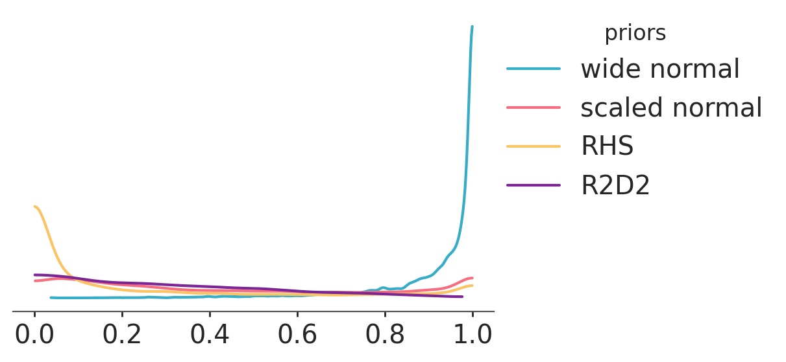
# use the truncated studet t prior for the wide normal (just a trick to get more prior predictive samples for the wide normal in the interesting region)
models = {
"wide normal": mod_n1pt_res,
"scaled normal": mod_n2p_res,
"RHS": mod_hsp_res,
"R2D2": mod_r2d2p_res,
}
bayesian_r2_priors = az.from_dict(
{
"ff": {
name: az.bayesian_r2(
idata, group="prior", pred_mean="mu", scale="sigma", summary=False
)
for name, idata in models.items()
}
},
sample_dims=["draw"],
)
pc = az.plot_dist(
bayesian_r2_priors,
group="ff",
cols=None,
aes={"color": ["__variable__"]},
visuals={
"title": False,
"point_estimate": False,
"point_estimate_text": False,
"credible_interval": False,
},
stats={"dist": {"bw_fct": 2}},
)
pc.add_legend("__variable__", title="priors")
pc.add_title("Bayesian R2")
pc.get_viz("plot", "priors").set_xlim(0.04, 0.42)
pc.get_viz("plot", "priors").set_ylim(0, 2.5)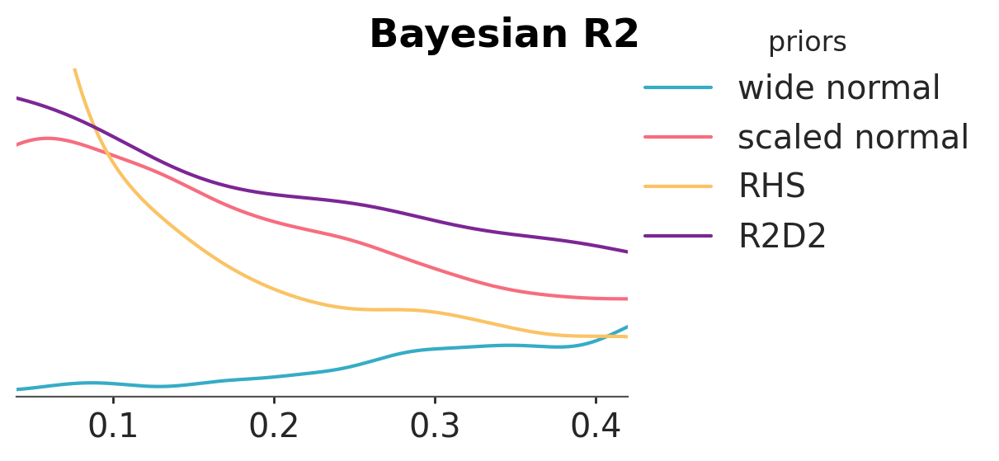
models = {
"wide normal": mod_n1_res,
"scaled normal": mod_n2_res,
"RHS": mod_hs_res,
"R2D2": mod_r2d2_res,
}
bayesian_r2_posteriors = az.from_dict(
{
"ff": {
name: az.bayesian_r2(idata, pred_mean="mu", scale="sigma", summary=False)
for name, idata in models.items()
}
},
sample_dims=["draw"],
)
pc = az.plot_dist(
bayesian_r2_posteriors,
group="ff",
cols=None,
aes={"color": ["__variable__"]},
visuals={
"title": False,
"point_estimate": False,
"point_estimate_text": False,
"credible_interval": False,
},
)
pc.add_legend("__variable__", title="posteriors")
pc.add_title("Bayesian R2")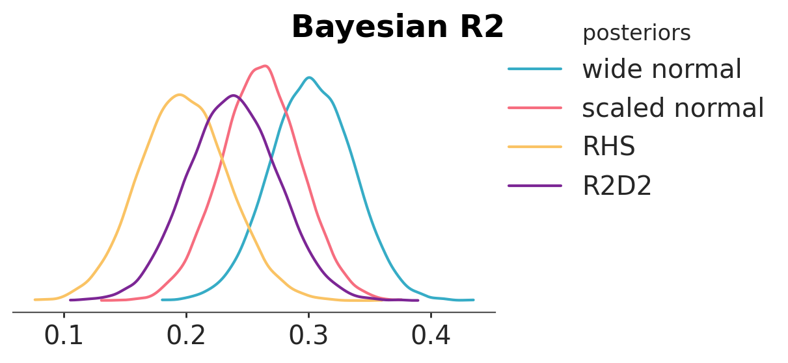
models = {
"wide normal": mod_n1_res,
"scaled normal": mod_n2_res,
"RHS": mod_hs_res,
"R2D2": mod_r2d2_res,
}
loo_r2_posteriors = az.from_dict(
{
"ff": {
name: az.loo_r2(idata, var_name="Gmat", summary=False)
for name, idata in models.items()
}
},
sample_dims=["draw"],
)
pc = az.plot_dist(
loo_r2_posteriors,
group="ff",
cols=None,
aes={"color": ["__variable__"]},
visuals={
"title": False,
"point_estimate": False,
"point_estimate_text": False,
"credible_interval": False,
},
)
pc.add_legend("__variable__", title="posteriors")
pc.add_title("LOO-R2")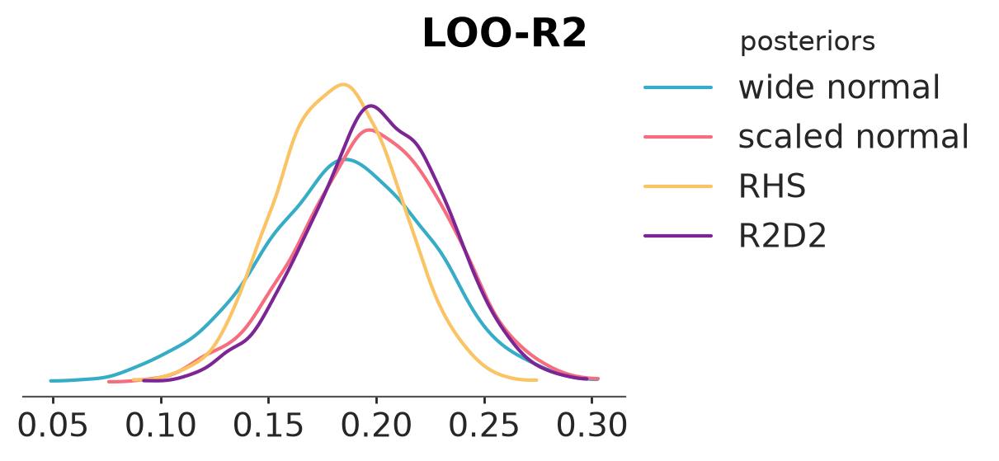
6 Marginal posteriors of coefficients
We plot the marginal posteriors for coefficients for the model with R2D2 prior. For many coefficients the posterior has been shrunk close to 0. Some marginal posteriors are wide.
pc = az.plot_ridge(
mod_r2d2_res,
var_names=predictors,
combined=True,
)
pc.coords = {"column": "ridge"}
az.add_lines(pc, 0)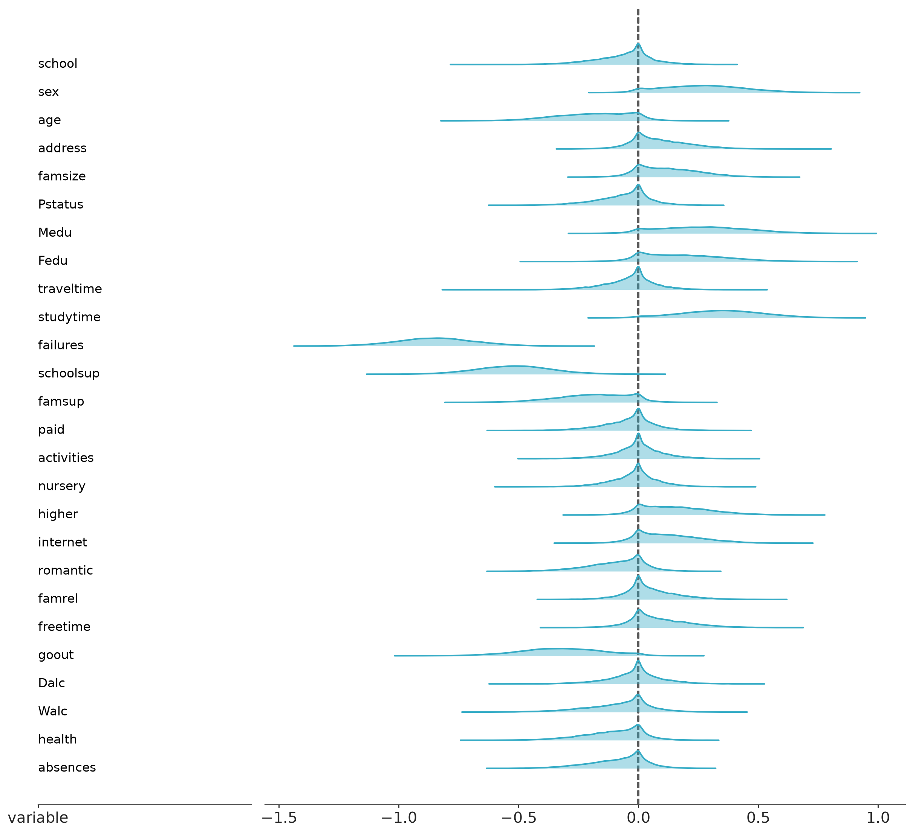
We check the bivariate marginal for Fedu and Medu coefficients, and see that while the univariate marginals overlap with 0, jointly there is not much posterior mass near 0. This is due to Fedu and Medu being collinear. Collinearity of predictors, make it difficult to infer the predictor relevance from the marginal posteriors.
az.plot_pair(mod_r2d2_res, var_names=["Fedu", "Medu"])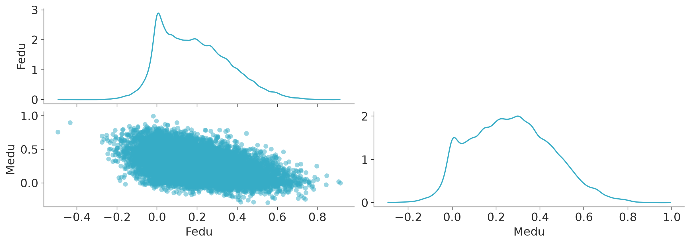
7 Model checking
We’re using a normal observation model, although we know that the exam scores are in a bounded range. The posterior predictive checking shows that we sometimes predict exam scores higher than 20, but the discrepancy is minor.
az.plot_ppc_dist(mod_r2d2_res)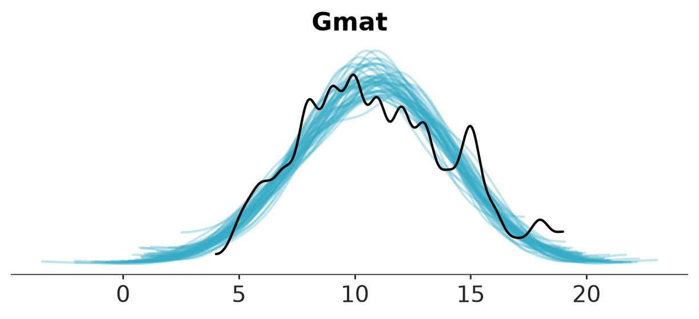
LOO cross-validation shows that otherwise the normal model is quite well calibrated.
az.plot_loo_pit(mod_r2d2_res)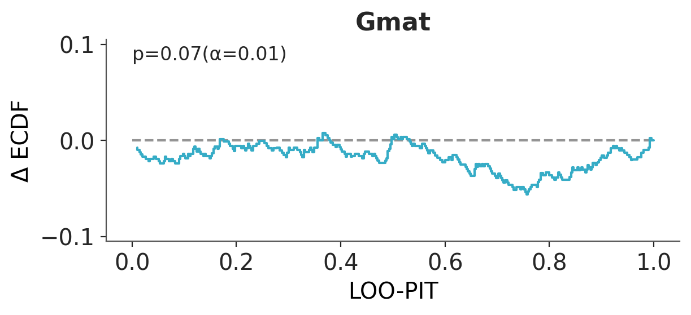
We could use truncated normal as more accurate model, but for example beta-binomial model cannot be used for median exam scores as some of the median scores are not integers. A fancier model could model the three exams hierarchically, but as the normal model is not that bad, we now continue with it.
8 Projection predictive variable selection
We use projection predictive variable selection implemented in kulprit to find the minimal set of predictors that can provide similar predictive performance as all predictor jointly. By default kulprit starts from the intercept only model and uses forward search to find in which order to add predictors to minimize the divergence from the full model predictive distribution.
8.1 Math exam score
Currently Kulprit does not support models with paramters that depend on other parameters, so we use the model with scaled normal prior for the projection predictive variable selection. But the model with R2D2 prior is used as the reference model (that’s why we compute the ELPD from it, and we pass the InferenceData from that model’s fit).
# The predictions (in the InferenceData) and the ELPD come from the reference model (R2D2 prior)
# and we use `mod_n2` to specify the covariates to be used in the search.
ref_idata = az.loo(mod_r2d2_res, pointwise=True)
ppi = kpt.ProjectionPredictive(mod_n2, mod_r2d2_res, ref_elpd=ref_idata)
ppi.project(early_stop=10)The following plot shows the relevance order of the predictors and estimated predictive performance given those variables. To speed up the search we stop the search after 10 predictors have been added. In practice, if we don’t have a strong prior belief about the number of relevant predictors, we could continue the search until all predictors have been added.
cmp_df = ppi.compare(min_model_size=1)
kpt.plot_compare(cmp_df);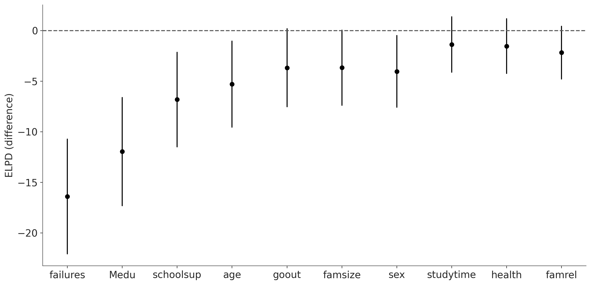
kulprit can also provide suggestion for the sufficient model size.
selected_1 = ppi.select()
selected_1['Intercept', 'failures', 'schoolsup', 'Medu', 'age', 'goout']Check the projected posterior for the selected model. The marginals of the projected posterior are all clearly away from 0.
pc = kpt.plot_forest(ppi, submodels=[selected_1.size])
pc.coords = {"column": "forest"}
az.add_lines(pc, 0)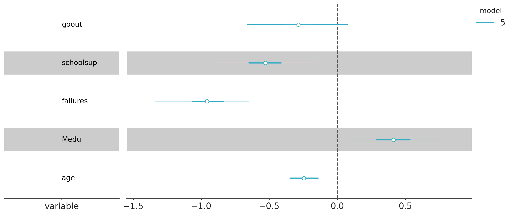
8.2 Portuguese exam scores
We repeat the same, but predicting grade for Portuguese instead of mathematics
formula = "Gpor ~ " + " + ".join(predictors)
r2d2_fn = make_r2d2(p, mean_R2, prec_R2, cons_D2)
mod_r2d2_por = bmb.Model(
formula,
data=student_Gpor,
dropna=True,
priors={
"common": bmb.Prior("r2d2", dist=r2d2_fn),
"Intercept": bmb.Prior("Normal", mu=0, sigma=1),
},
)
mod_r2d2_por_res = mod_r2d2_por.fit(draws=4000, tune=1000, **bambi_kwargs)
mod_r2d2_por.predict(mod_r2d2_por_res, kind="response", random_seed=SEED)Automatically removing 275/657 rows from the dataset.
Initializing NUTS using jitter+adapt_diag...
Multiprocess sampling (4 chains in 4 jobs)
NUTS: [sigma, Intercept, common_R2, common_phi, school_z, sex_z, age_z, address_z, famsize_z, Pstatus_z, Medu_z, Fedu_z, traveltime_z, studytime_z, failures_z, schoolsup_z, famsup_z, paid_z, activities_z, nursery_z, higher_z, internet_z, romantic_z, famrel_z, freetime_z, goout_z, Dalc_z, Walc_z, health_z, absences_z]/home/osvaldo/anaconda3/envs/bwb/lib/python3.14/site-packages/rich/live.py:260: UserWarning: install "ipywidgets"
for Jupyter support
warnings.warn('install "ipywidgets" for Jupyter support')
/home/osvaldo/anaconda3/envs/bwb/lib/python3.14/site-packages/pymc/sampling/mcmc.py:1163: FutureWarning: Passing `log_likelihood` via `idata_kwargs` is deprecated and will be removed in future versions. Call `pm.compute_log_likelihood(idata)` instead.
return _sample_return(
Sampling 4 chains for 1_000 tune and 4_000 draw iterations (4_000 + 16_000 draws total) took 62 seconds.
There were 77 divergences after tuning. Increase `target_accept` or reparameterize.Compare bayesian-\(R^2\) and LOO-\(R^2\). We see that Portuguese grade is easier to predict given the predictors (but there is still a lot of unexplained variance).
az.bayesian_r2(mod_r2d2_por_res, pred_mean="mu", scale="sigma")bayesian_R2(mean=0.32, eti_lb=0.24, eti_ub=0.39)az.loo_r2(mod_r2d2_por_res, var_name="Gpor")loo_R2(mean=0.28, eti_lb=0.21, eti_ub=0.34)Plot marginal posteriors of coefficients
pc = az.plot_ridge(
mod_r2d2_por_res,
var_names=predictors,
combined=True,
)
pc.coords = {"column": "ridge"}
az.add_lines(pc, 0)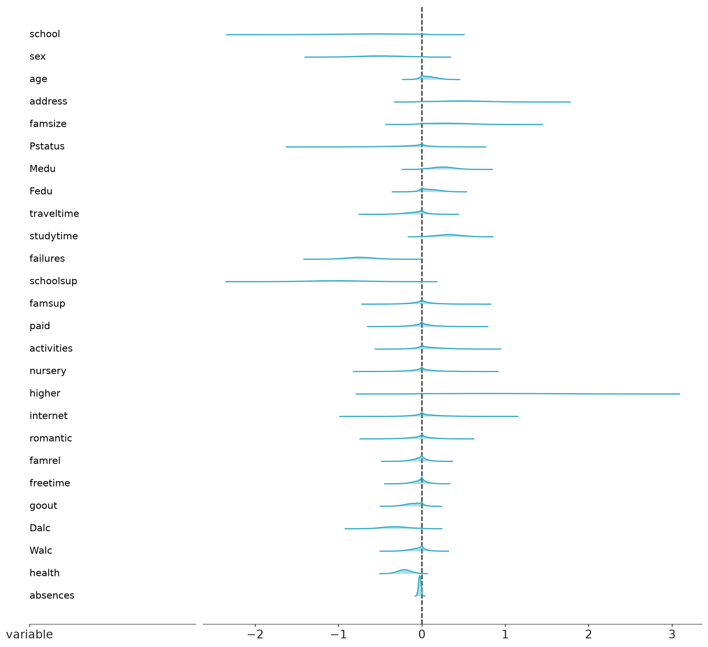
We use projection predictive variable selection.
formula = "Gpor ~ " + " + ".join(predictors)
mod_por = bmb.Model(
formula,
data=student_Gpor,
dropna=True,
)
mod_por.build()
ref_idata = az.loo(mod_r2d2_por_res, pointwise=True)
ppi_por = kpt.ProjectionPredictive(mod_por, mod_r2d2_por_res, ref_elpd=ref_idata)
ppi_por.project(early_stop=10)Automatically removing 275/657 rows from the dataset.The following plot shows the relevance order of the predictors and estimated predictive performance given those variables.
cmp_df_por = ppi_por.compare(min_model_size=1)
kpt.plot_compare(cmp_df_por);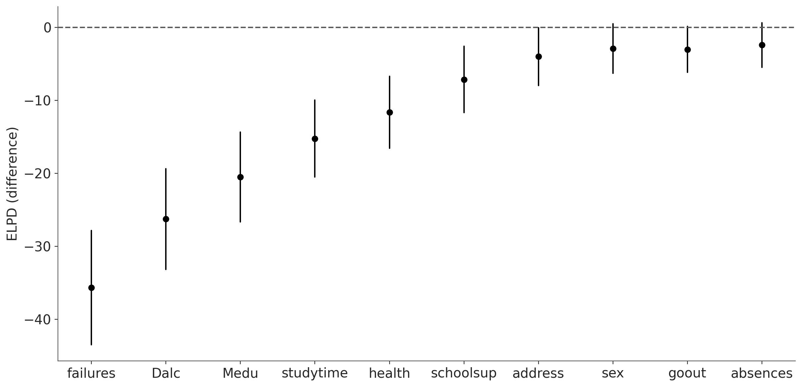
kulprit can also provide suggestion for the sufficient model size.
selected_2 = ppi_por.select()
selected_2['Intercept', 'failures', 'Dalc', 'Medu', 'studytime', 'schoolsup', 'health', 'address', 'sex']Check the projected posterior for the selected model.
pc_por = kpt.plot_forest(ppi_por, submodels=[selected_2.size])
pc_por.coords = {"column": "forest"}
az.add_lines(pc_por, 0)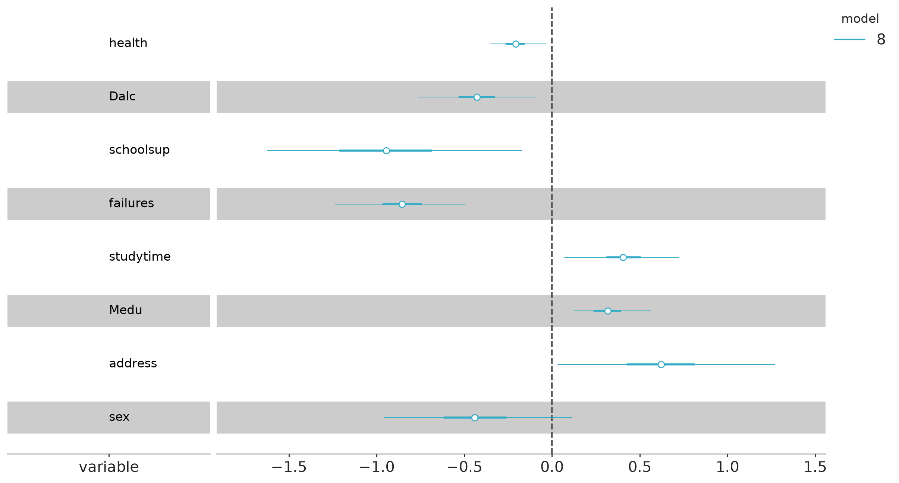
8.3 Using the selected model
For further predictions we can use the projected draws. Due to how different packages work, sometimes it can be easier to rerun MCMC conditionally on the selected variables. This gives a slightly different result, but when the reference model has been good the difference tends to be small, and the main benefit form using kulprit is still that the selection process itself has not caused overfitting and selection of spurious covariates.
References
Cortez, Paulo, and Alice Silva. 2008. “Using Data Mining to Predict Secondary School Student Performance.” In Proceedings of the 5th Future Business Technology Conference (FUBUTEC 2008), edited by A. Brito and J. Teixeira, 5–12.
Gelman, A., J. L. Hill, and A. Vehtari. 2020. Regression and Other Stories. Cambridge University Press.
Piironen, Juho, and Aki Vehtari. 2017. “Sparsity Information and Regularization in the Horseshoe and Other Shrinkage Priors.” Electronic Journal of Statistics 11: 5018–51.
Tosh, C., P. Greengard, B. Goodrich, A. Gelman, A. Vehtari, and D. Hsu. 2024. “The Piranha Problem: Large Effects Swimming in a Small Pond.” Notices of the American Mathematical Society 72: 15–25.
Zhang, Yan Dora, Brian P. Naughton, Howard D. Bondell, and Brian J. Reich. 2022. “Bayesian Regression Using a Prior on the Model Fit: The R2-D2 Shrinkage Prior.” Journal of the American Statistical Association 117: 862–74.
Licenses
- Code © 2023–2026, Aki Vehtari, licensed under BSD-3.
- Text © 2023–2026, Aki Vehtari, licensed under CC-BY-NC 4.0.